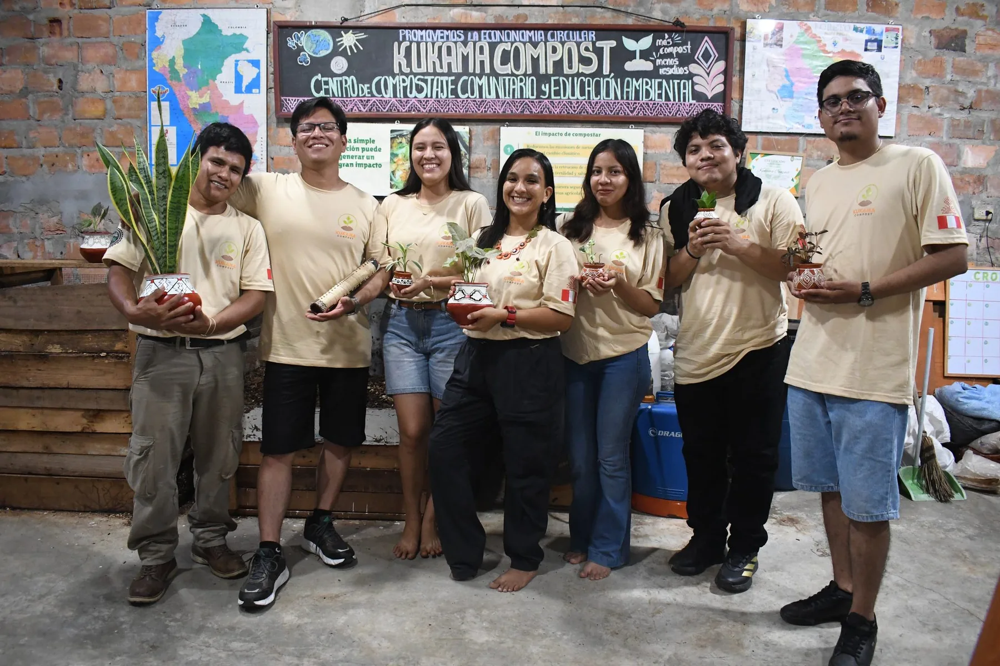

Nombre completo
Comunidad Kukama · Iquitos
Comunidades protagonistas
Conoce a las personas, sus experiencias y las creaciones que nacen de sus manos.
Mujeres que transforman

Comunidad Kukama · Iquitos

Comunidad Kukama · Loreto

Comunidad Kukama · Amazonía peruana